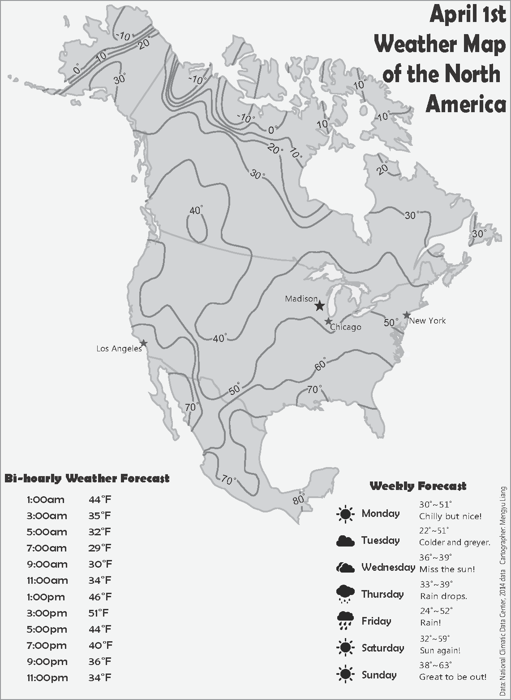

§ April 1st Weather Map of North America

This isoline map was a project for Geo370, which I took at UW-Madison in 2014. I used ArcMap to generate and generalize the isotherms. The automated interpolation method I used is kriging. The isotherm lines looked rather jagged at first; this map shows the result after generalization of the line work. I then added labels and other supplementary text using Adobe Illustrator to complete the map.